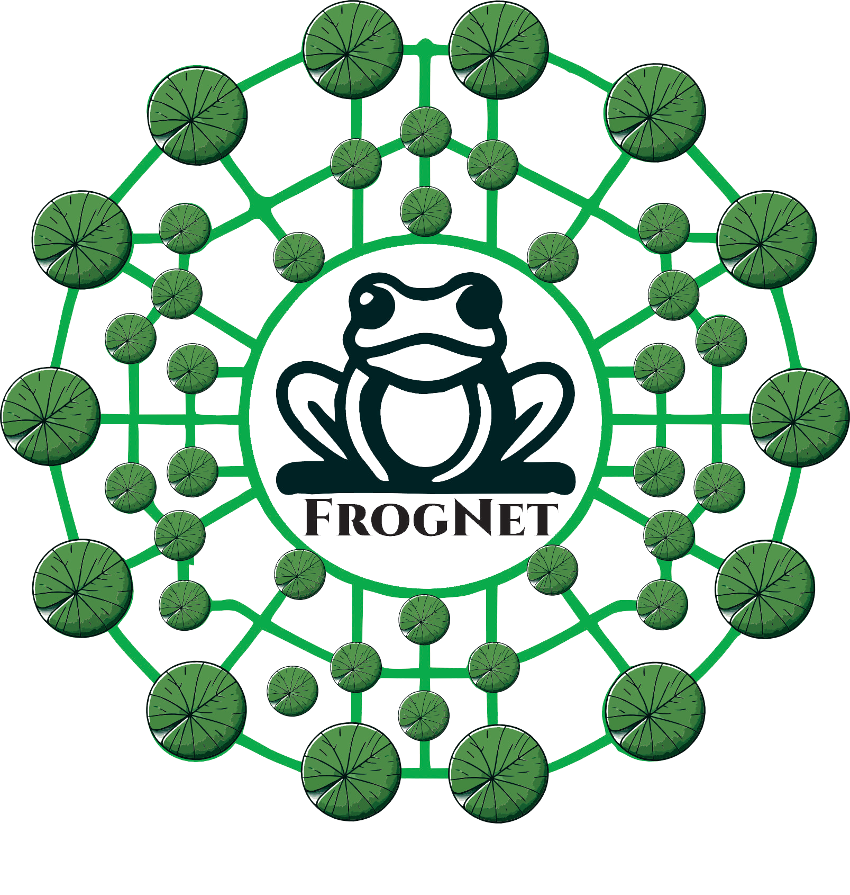

An HD video call, coast to coast across the public internet — then choked to dial-up-era bandwidth, on purpose.
We took the bandwidth away a step at a time and watched for the moment it broke. The picture stepped down. The audio never flinched. Nothing reconnected, because nothing ever dropped — and the instant we gave the link back, it stood right up.
We put a laptop in New York and a laptop in Seattle and opened a live HD call. The path between them was not a straight wire — it ran through three nodes in Seattle, an encrypted tunnel across the public internet, and three nodes in New York. A chain of cheap machines. No server in the middle doing the heavy lifting. To FrogNet, the whole thing was one private network.
Then we did the thing you are never supposed to do to a live video call. We started taking the bandwidth away — on purpose, a step at a time — and watched for the moment it broke.
Down past broadband. Past DSL. Down into the dial-up era: about three hundred kilobits a second for each direction of video. A normal HD call is dead long before that.
As we tightened the link, the picture stepped down one rung at a time. 720p, then a little less, then less again — four rungs in all — and it kept a real picture the whole way down.
The audio did not move. Not a stutter, not a dropout, none of those underwater moments where a voice smears and you lose the word. It held flat for the entire test.
And the call never reconnected — because it never disconnected. No “Reconnecting…”, no spinner, no drop back to a lobby. The session rode the bad link all the way to the floor and stayed up.
We jumped the link back up. The picture snapped to full 720p in both directions — instantly. No renegotiation, no dialing back in. It stood right back up, as if nothing had happened.
A 720p call on a conventional stack wants somewhere between one-and-a-half and two-and-a-half megabits a second. Give it three hundred kilobits and HD simply is not on the menu — the encoder cannot make a watchable picture, and the session machinery starts timing out underneath it.
I want to be precise. Plenty of modern stacks degrade a stream; they will shed resolution and frame rate when they must. What they do not do is keep the whole call alive while the network underneath comes apart and then heals. The stream bends — the session snaps.
So how did ours survive? Not with a clever patch bolted onto the same old stack. FrogNet is a clean-sheet rebuild of how machines talk to each other — engineered, from the bearer up, to bring networking into the modern era.
The old model assumes two things: a reliable pipe, and a server in the middle keeping everyone in sync. FrogNet assumes neither. It is a full stack, and every layer was rethought to need less, trust less, and survive more.
That whole stack is what carried the call you just watched — and it is why the call behaved the way it did when the floor dropped out.
The reason our call survived is not a cleverer codec. It is that there was nothing in the middle holding the call together to begin with.
No server to lose. No session to renegotiate. No connection state stranded on a link that keeps flapping. A conventional call is a thread strung between two ends through something in the middle; pull on it and it breaks. FrogNet does not string the thread. Each side keeps its own picture of what is there and reconciles it with the other — so when the link goes bad there is no handoff to fumble and no center to go find. It just re-derives.
You cannot get this by bolting adaptation onto a conventional stack. The gracefulness comes from what is missing.
If your network is a hostile place — field operations, disaster response, remote industrial sites, anywhere the link is thin, shared, and unreliable — this is the behavior you actually need. Not “flawless on the conference-room Wi-Fi.” Working while the link is failing, and recovering the instant it can.
This is not a render or a roadmap. It ran end to end, on hardware you could buy today.
FrogNet. Your own network, on equipment you already own.
Get the full picture.
The technical overview walks the whole stack — the fabric, UnREST, the codecs, and the media plane that carried this call — at altitude, in plain terms.
(Source available on request.)
